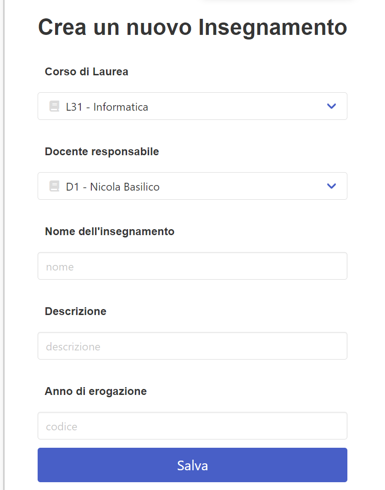

Relazione del progetto “Piattaforma per la gestione degli esami universitari” (UniDB) per il corso di Basi Di dati, appello del 18/01/2024.
Realizzato da Aiman Qaouji, 982535
Per accedere a qualsiasi account di UniDB, la password è 12345. Le email sono tutte visibili dall'account della segreteria (segre.teria@segreteria.uni).
Per l’installazione delle componenti si faccia riferimento al manuale utente. ## Struttura * database: Il dump del database è contenuto nella cartella progetto/database, contenente: due script sql (uno per la creazione e l’altro per la popolazione del database), e due immagini riportanti gli schemi ER e logico. * WebApp: Tutti i file PHP e CSS sono contenuti nella cartella progetto/webapp. * docs: Documentazione è interamente contenuta nella cartella corrente.
Lo schema ER presenta una gerarchia tra l’entità padre users e le entità figlie segreteria, docente e studente. Ho implementato questa gerarchia in quanto vi è un attributo comune a tutti (email) e per distinguere concettualmente l’utente (entità generalizzata che accede all’applicazione con email e password) dal tipo di utente (entità che in base alla sua natura può accedere a determinati servizi/funzionalità/tabelle).
Quando uno studente consegue la Laurea (ovvero supera tutti gli esami previsti nel suo corso di laurea) oppure rinuncia agli studi, le sue informazioni vengono archiviate automaticamente: I dati delle tabelle unidb.studente e unidb.carriera_esame vengono caricati, rispettivamente, nelle tabelle speculari unidb.storico_studente e unidb.storico_carriera. Tutto ciò grazie all’implementazione del trigger storico_trigger che fa uso del meotodo studente_carriera_storico:
CREATE OR REPLACE TRIGGER storico_trigger
BEFORE DELETE
ON unidb.studente
FOR EACH ROW
EXECUTE FUNCTION public.studente_carriera_storico();
CREATE OR REPLACE FUNCTION public.studente_carriera_storico()
RETURNS trigger
LANGUAGE 'plpgsql'
COST 100
VOLATILE NOT LEAKPROOF
AS $BODY$
begin
insert into unidb.storico_studente values(old.matricola, old.nome, old.cognome, old.anno, old.email, old.codice_cdl);
insert into unidb.storico_carriera
select * from unidb.carriera_esame where matricola = old.matricola;
return old;
end;
$BODY$;
ALTER FUNCTION public.studente_carriera_storico()
OWNER TO postgres;Quando a uno studente viene verbalizzato il voto di un determinato esame, questo voto viene registrato nella tabella unidb.carriera_esame. Sarebbe ragionevole che questo studente venga anche disiscritto dall’appello in cui ha sostenuto quell’esame una volta verbalizzato, per evitare informazioni ridondanti nella pagina di gestione degli studenti iscritti del docente. ragion per cui ho implementato il seguente trigger after_insert_carriera_esame:
CREATE OR REPLACE TRIGGER after_insert_carriera_esame
AFTER INSERT
ON unidb.carriera_esame
FOR EACH ROW
EXECUTE FUNCTION public.disiscrivi_dopo_verbalizzazione();
CREATE OR REPLACE FUNCTION public.disiscrivi_dopo_verbalizzazione()
RETURNS trigger
LANGUAGE 'plpgsql'
COST 100
VOLATILE NOT LEAKPROOF
AS $BODY$
BEGIN
-- Cancella l'iscrizione dello studente all'esame dopo la verbalizzazione
DELETE FROM unidb.iscrizione_esame
WHERE matricola = NEW.matricola
AND codice_esame = NEW.codice_esame;
RETURN NEW;
END;
$BODY$;
ALTER FUNCTION public.disiscrivi_dopo_verbalizzazione()
OWNER TO postgres;La creazione o la cancellazione di un appello presentano due criticità: * Un docente non dovrebbe poter eliminare un appello se ci sono studenti iscritti; * Un docente non dovrebbe poter creare un appello se in quel giorno è previsto già un altro appello dello stesso CDL e anno accademico
Anche questi due problemi vengono ovviati, rispettivamente, con i trigger before_delete_esame:
CREATE OR REPLACE TRIGGER before_delete_esame
BEFORE DELETE
ON unidb.esame
FOR EACH ROW
EXECUTE FUNCTION public.check_iscrizioni_before_delete();
CREATE OR REPLACE FUNCTION public.check_iscrizioni_before_delete()
RETURNS trigger
LANGUAGE 'plpgsql'
COST 100
VOLATILE NOT LEAKPROOF
AS $BODY$
DECLARE
esame_count INTEGER;
BEGIN
-- Controlla se ci sono iscrizioni per l'esame
SELECT COUNT(*)
INTO esame_count
FROM unidb.iscrizione_esame
WHERE codice_esame = OLD.codice_esame;
-- Se ci sono iscrizioni, annulla la cancellazione
IF esame_count > 0 THEN
RAISE EXCEPTION 'Impossibile cancellare l''esame, ci sono studenti iscritti.';
END IF;
-- Se non ci sono iscrizioni, permetti la cancellazione
RETURN OLD;
END;
$BODY$;
ALTER FUNCTION public.check_iscrizioni_before_delete()
OWNER TO postgres;e programmazione_esame_trigger:
CREATE OR REPLACE TRIGGER programmazione_esame_trigger
BEFORE INSERT OR UPDATE
ON unidb.esame
FOR EACH ROW
EXECUTE FUNCTION public.check_inserimento_esame();
CREATE OR REPLACE FUNCTION public.check_inserimento_esame()
RETURNS trigger
LANGUAGE 'plpgsql'
COST 100
VOLATILE NOT LEAKPROOF
AS $BODY$
begin
perform *
FROM unidb.insegnamento i INNER JOIN unidb.esame e ON i.codice_i = e.codice_i
WHERE e.data_esame = new.data_esame AND e.codice_cdl = new.codice_cdl AND i.anno_erogazione = (
select anno_erogazione
from unidb.insegnamento
where insegnamento.codice_i = new.codice_i AND insegnamento.codice_cdl = new.codice_cdl
);
IF FOUND THEN RAISE 'Errore: in questa data è già previsto un esame dello stesso CDL e anno di erogazione'; RETURN NULL;
ELSE RETURN NEW;
END IF;
END;
$BODY$;
ALTER FUNCTION public.check_inserimento_esame()
OWNER TO postgres;Come richiesto, nelle specifiche è presente un controllo di Insegnamenti massimi che un docente può sostenere (3), grazie al trigger max_insegnamenti_trigger:
CREATE OR REPLACE TRIGGER max_insegnamenti_trigger
BEFORE INSERT OR UPDATE
ON unidb.insegnamento
FOR EACH ROW
EXECUTE FUNCTION public.maxcheck_insegnamenti_docente();
CREATE OR REPLACE FUNCTION public.maxcheck_insegnamenti_docente()
RETURNS trigger
LANGUAGE 'plpgsql'
COST 100
VOLATILE NOT LEAKPROOF
AS $BODY$
DECLARE
numero_insegnamenti INT;
BEGIN
SELECT COUNT(codice_i) INTO numero_insegnamenti
FROM unidb.insegnamento i INNER JOIN unidb.docente d on i.docente = d.codice_docente
WHERE new.docente = d.codice_docente;
IF numero_insegnamenti >= 3 THEN RAISE 'Ogni docente può avere al massimo 3 insegnamenti di cui è responsabile.';
RETURN NULL;
ELSE RETURN new;
END IF;
END;
$BODY$;
ALTER FUNCTION public.maxcheck_insegnamenti_docente()
OWNER TO postgres;Uno studente, per iscriversi ad un esame, ha come vincoli quello di iscriversi ad un esame facente parte del suo piano di studi, e quello di aver soddisfatto tutte le propedeuticità richieste da quell’esame. Questo controllo è effettuato dal trigger iscrizione_trigger:
CREATE OR REPLACE TRIGGER iscrizione_trigger
BEFORE INSERT
ON unidb.iscrizione_esame
FOR EACH ROW
EXECUTE FUNCTION public.check_iscrizione_esame();
CREATE OR REPLACE FUNCTION public.check_iscrizione_esame()
RETURNS trigger
LANGUAGE 'plpgsql'
COST 100
VOLATILE NOT LEAKPROOF
AS $BODY$
DECLARE
propedeuticita_richieste INT;
propedeuticita_passate INT;
BEGIN
SELECT COUNT(propedeuticita) INTO propedeuticita_richieste
FROM unidb.propedeuticita
WHERE codice_i = (
select e.codice_i
from unidb.insegnamento i inner join unidb.esame e on i.codice_i = e.codice_i
where new.codice_esame = e.codice_esame
);
SELECT COUNT(distinct i.codice_i) INTO propedeuticita_passate
FROM unidb.carriera_esame c inner join unidb.esame e on c.codice_esame = e.codice_esame
INNER JOIN unidb.insegnamento i ON e.codice_i = i.codice_i
WHERE c.matricola = new.matricola AND c.codice_i in (
select propedeuticita
from unidb.propedeuticita
where codice_i = (
select e1.codice_i
from unidb.insegnamento i1 inner join unidb.esame e1 on i1.codice_i = e1.codice_i
where new.codice_esame = e1.codice_esame
)
)AND c.voto >= 18;
IF propedeuticita_richieste = propedeuticita_passate THEN RETURN NEW;
ELSE RAISE 'Non puoi iscriverti a questo esame in quanto non fa parte del tuo piano di studi o non hai le propedeuticita richieste.';
RETURN NULL;
END IF;
END;
$BODY$;
ALTER FUNCTION public.check_iscrizione_esame()
OWNER TO postgres;Per la maggior parte del sito web le pagine possono essere di due “categorie”: pagine contenenti una lista di informazioni e dati (racchiusi da una tabella), oppure pagine di accesso, creazione o modifica dati (in cui viene utilizzato un form). Le pagine infatti sono “standardizzate” e seguono un pattern pressochè uguale a quelle della stessa “categoria” e per questo motivo spesso i codici delle diverse pagine differiscono di poco.
Una volta inserite le credenziali nella pagina di login, il codice “redirige” alla pagina login.php che, per controllarne la validità, a sua volta fa uso della funzione controlla_login:
function controlla_login($email, $password, $utente) {
$logged = null;
$db = open_pg_connection();
$sql = "SELECT email FROM unidb.users WHERE email = $1 AND password = md5($2) AND utente = $3";
$params = array(
$email,
$password,
$utente
);
$result = pg_prepare($db, "check_user", $sql);
$result = pg_execute($db, "check_user", $params);
if($row = pg_fetch_assoc($result)){
$logged = $row['email'];
}
close_pg_connection($db);
return $logged;
}Nota bene: per garantire riservatezza, le password sono hashate grazie alla funzione md5 di php, che viene applicata sia all’inserimento di un nuovo utente da parte della segreteria, sia alla effettiva verifica delle credenziali.
La homepage è costituita in alto dalla navbar importata con require, e più in basso dal menù personalizzato in base al tipo di utente che accede:

Una pagina di gestione è costituita da navbar, una tabella riportante tutti i dati e tasti di controllo e, se necessario, un link che riporta a un form.

Il form è utilizzato per creare una nuova istanza (studente, docente, CDL …) o per modificarla.
